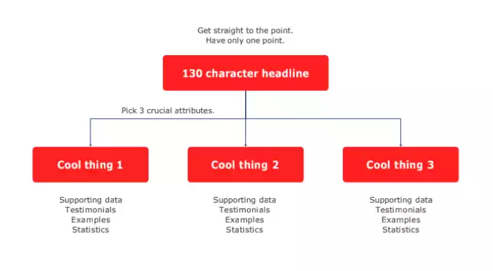

Design Thinking is a human-centered approach to problem solving that draws from the designer's toolkit
to
integrate the needs of people, the possibilities of technology, and the requirements for business success.
Features of Design Thinking
Find Simplicity
Appealing Product
Innovative Solutions
User requirements
Client Experience
Applications:
Business
Education
Health Care
IT
Principals:
Empathy
User Centric
Observation
Creativity
Design Thinking- 5 step process:
Design thinking is a 5 step process involving
Empathize: Requirement Gathering, interviews, field visits
Define: Define the problem and arrive at the problem statement
Ideate: Come up with a lot of ideas for the problem
Prototype: Build a test prototype using current technologies
Test: Get user feedback for the model and iterate if necessary
Design thinking as a strategy for innovation:
Design thinking forms the core of effective strategy development and seamless organizational change.
Companies like apple and sap found a 211% increase on implementing design thinking strategies.
Challenges in Design thinking:
Normal Problem: The problem statement is clear and it has a viable solution that can be easily
tested.
They are well defined problems. The solution is available through technical knowledge
Wicked Problems: They are ill defined problems. In this, the problem statement is not very clear
and it
is up to the design thinkers to both define the problem and come up with a viable solution to the problem.
In
this, significant time goes into requirement analysis and gathering. Problem shaping, problem definition and
requirement analysis is a huge part of solving such problems
Design vs Design Thinking:
Design thinking is a methodology to that can is used to innovate and solve business problems.
Design is about applying design thinking and design methodologies to material products.
Stanford’s Design Thinking Model:
<5 step process>
Deep understanding of user requirements
The formation of heterogenous teams
Dialogue based conversations
Use of structured and facilitated processes
IDEO’s Design Thinking Model:
<5 step process>
Empathy
Optimise
Embrace Ambiguity
Make it
Learn from failure
Iterate, Iterate
Creative confidence
D. School's Design Thinking Mindset:
Show, don’t tell
Focus on human values
Craft Clarity
Experiment
Collaborate
Design Thinking Mindset
Be user centred
Be experimental
Be intentional
<Also Include curiosity, Harbor empathy, don’t optimize; innovate>
PDMA’s Design Thinking
People Centric
Communication Skills
Holistic
Growth Mindset
Unit 2: Design Thinking
What is Design Thinking:
Design thinking is a process and mindset for creatively and systematically solving complex problems. It is a way of
thinking and working that is human-centred, collaborative, and iterative.
Design Thinking Process
Empathy: (i) Interview (ii) Observation (iii) Experience
Prototype: ‘Prototype is worth a thousand meeting’
Test: never fall in love with an idea, iterate
Design Thinking Non Linear Process:
Design thinking is a non-linear process because it involves a cyclical and iterative approach to problem solving. It
starts with a broad and open-ended exploration of the problem space, followed by the identification of specific
areas to focus on and the development of potential solutions. These solutions are then tested and refined through
prototypes and experiments, and the process is repeated until a satisfactory solution is found.
6 Hats
White Hat: Neutral, focussed with data
Red Hat: Emotional, goes with gut feeling
Yellow Hat: Optimistic, positive
Green Hat: Creative, growth
Blue Hat: Organizing, management
Black Hat: Judgement, cautious
For success in DT
User Centric focus
Collaboration and team work
Empathy
Creativity
Iterative
Communication
Design Thinking Mindset
Empathy
Collaboration
Creativity
Curiosity
Flexibility
Persistence
The Round Robin Exercise
Define
Formulate How Might We questions
Brain Storm Ideas
Evaluate and prioritize ideas
Develop plan
Unit 3: User Persona
What is a Persona?
A persona is a fictional character sketch representing one segment of a targeted audience.
Personas are used to help designers and developers understand the needs of the people they are designing for.
Great personas can bring focus, build empathy, encourage consensus, create efficiency, and lead to better
decisions.
Personas are not meant to be a complete representation of a person, but rather a representation of a group of
people.
Demographics vs. Personas
Demographics include basic information like age, gender, and income bracket.
Personas dig into the personality of the customer and what drives them to seek out products or services.
Personas are more detailed than demographics and focus on what makes customers tick.
Proto Personas
Proto personas are fictional representations of real personas used to help understand users better.
Proto personas are fast to produce and help avoid designing for everyone.
Proto personas also help discover assumptions and misconceptions.
How to Create a Persona
Step 1: Conduct user research to learn about your users and why they use the system.
Step 2: Condense the research and look for themes and characteristics specific, relevant, and universal to the
system and its users.
Step 3: Brainstorm and organize elements into persona groups that represent your target users. Refine and
prioritize personas.
Step 4: Develop realistic descriptions of each persona's background, motivations, and expectations.
Types of Personas
Goal-directed personas focus on what the typical user wants to do with the product.
Role-based personas are based on the user's role in the organization.
Engaging personas focus on the user's emotional state.
Fictional personas are not based on real users and focus on what the typical user wants to do with the product.
Workflows and Stuff
Personas can help with understanding user workflows and how they interact with products or services.
Understanding workflows can lead to better product design and user experience.
Unit 4: User Empathy
What is User Empathy:
Empathy is the ability to understand and share the feelings of another. It is the ability to put yourself in someone
else’s shoes. It is the ability to understand the perspective of another person.
Importance of User Empathy:
User empathy is the ability to understand the user's needs and feelings.
It helps to understand the user's perspective, problems, and goals.
Design thinking process is centered around user empathy.
Beginner's mindset is assuming that the user is a novice.
Ways to Develop User Empathy:
Ask "What?", "Why?", "How?" questions to the user.
Take photos and videos of the user using the product and analyze them.
Interview the user and brainstorm question ideas.
Engage with extreme users to minimize wasted effort.
Share inspiring stories of people who have used the product.
Bodystorming is placing yourself in the user's shoes.
Use empathy maps to visualize customer needs and condense customer data.
Components of an Empathy Map:
Needs, Influences, Actions, Feelings, and Pain.
Helps to categorize users and communicate personas.
User research is necessary to create an empathy map.
Unit 5: Pitching Techniques
Business pitches are a great way to get your ideas across to investors for funding.
What is a pitch?
A pitch is a short presentation that you give to investors to get funding for your business. It can be sit down
discussion or a presentation. There are three types of pitches:
30 sec - Elevator Pitch
3 minute - Story Pitch
20 minute - Oh Fuck!
30 sec Pitch
This is also known as the elevator pitch. It is a short pitch that you give to investors in an elevator. It should be
short and sweet. It should be to the point.
KISS: Keep it simple stupid.
Cut Technical jargon
7 sec to form good impression
Message Map:

3 Minute Pitch
This is also known as the story pitch. It is a medium length pitch that you give to investors. It should be medium
length. It should be to the point.
People don't buy what you do, they buy what you believe. -Simon Sinek
20 Minute Pitch
In a 20 minute pitch, you can go into more detail about your business. We can do this with a 10/20/30 rule. This
means:
10 slides
20 minutes
30 point font
The 10 slides should include stuff like: Cover, Problem, Solution, Market, Competition, Team, Business Model,
Financials, Milestones, and Q&A.